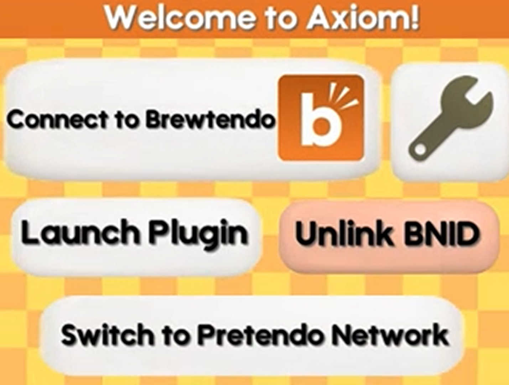
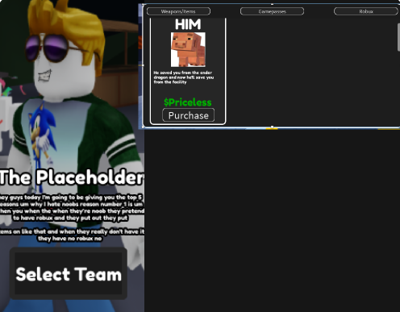
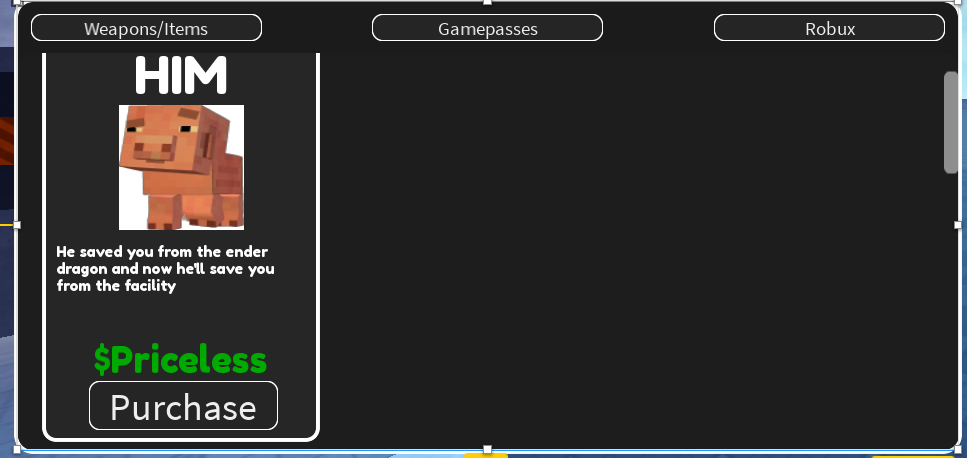
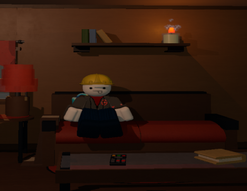

Axiom
N3DS Homebrew application
Axiom is a patcher for a Nintendo 3DS revival network, I made this unofficial UI for fun.
I am a learning UI/UX Designer for games and websites, and a small content creator on Polytoria and Luduvo. Check out some of my work!

N3DS Homebrew application
Axiom is a patcher for a Nintendo 3DS revival network, I made this unofficial UI for fun.


Laboratory Game UI
One of my passion projects, a Laboratory game, was unfortunately cancelled by the owner. I was working on their UI.

Placeholder
Its the real bushdev